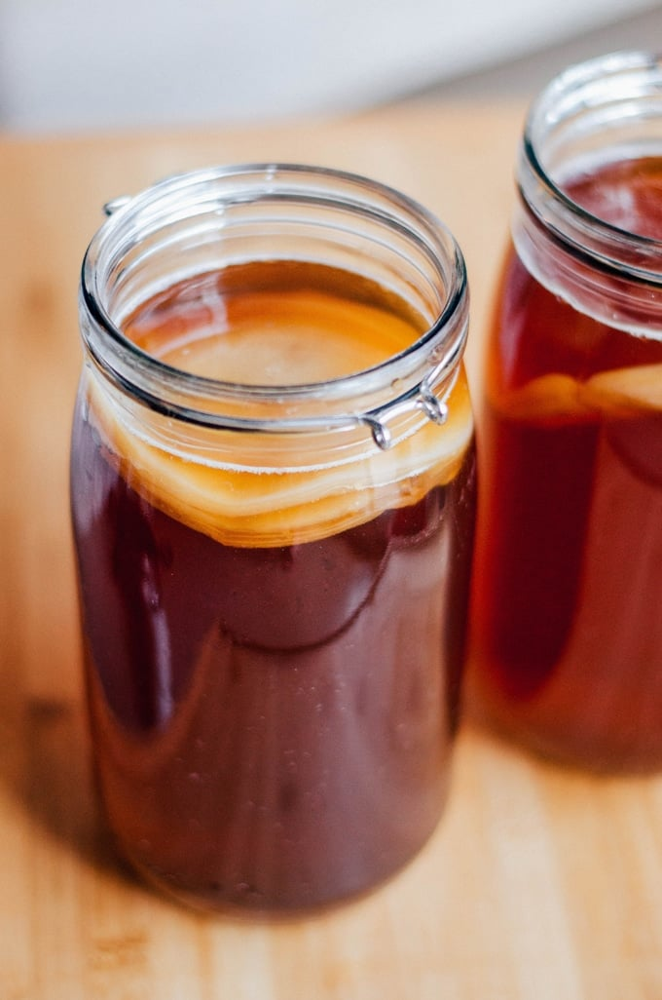

Homemade Kombucha

Description
Kombucha is a healthy and delicious probiotic beverage. Unfortunately, store bought kombucha tend to be pretty pricey, costing at least $3-5 per 16 oz bottle. Fortunately, it's simple and cheap to make once you get the hang of it, and there are so many different tasty flavors you can play around with.
Ingredients:
Making a SCOBY
Note: these ingredients are not needed if you plan on buying your SCOBY.
- 7 cups (1.6 L) clean water
- 1.2 cup (100 g) white sugar
- 4 bags of caffeinated black tea
- 1 cup (235 mL) unpasteurized, unflavored store-bought kombucha
First Fermentation
- 14 cups (3.5 quarts, 3.3 L) clean water
- 1 cup (200 g) white sugar
- 8 bags black tea
- 2 cups (470 mL) of unflavored kombucha (from the previous batch, unflavored kombucha from the store, or the starter tea that came with the SCOBY, if purchased
- 1 or 2 SCOBYs per container
Second Fermentation
- Homemade kombucha from the first fermentation
- Sweetener (ie fruit, sugar, store-bought, or homemade fruit juice)
Instructions
Making a SCOBY
Note: Jump to the First Fermentation step if you purchased your SCOBY.
- Make Tea: Bring water to a boil in a clean pot. Remove from heat and dissolve sugar into it. Add the tea and allow to steep while water cools to room temperature. Only when the water is at room temperature, is it ready to work with. (If the water is hot, you risk killing your SCOBY.)
- Add Starter: Pour the sweetened tea into your glass jar(s), then pour the store bought kombucha in. (Make sure the jar has a wide enough mouth that'll allow you to stick your hand in and remove the SCOBY from the jar in the future.)
- Ferment: Cover with a few layers of tightly woven cloth and secure with a rubber band. (Coffee filters will do just fine.) Set somewhere dark and room temperature (70-75 degrees F, 21-24 C) for 1 to 4 weeks, until a 1/4 inch (1/2 cm) SCOBY has formed. Please note that if the kombucha is kept below room temperature, it runs the risk of developing mold. If you notice any mold, throw out the entire batch, including the SCOBY, and sterilize the jar before starting over.
First Fermentation
- Make Tea: Bring water to a boil in a clean pot. Remove from heat and dissolve sugar into it. Add the tea and allow to steep while water cools to room temperature.
- Add Starter: With clean hands, gently remove the SCOBY from the tea and place on a clean plate. Rinse out jar(s). Pour room temperature sweetened tea into your jar(s), then pour in starter kombucha.
- Ferment: Gently place SCOBY into jar then cover with a few layers of the tightly woven cloth (ie coffee filter) and secure with a rubber band. Set the jar(s) somewhere dark and room temperature (70-74 degrees F, 21-24 C) for anywhere from 5 to 10 days. Begin tasting the tea on day 6. The longer the tea ferments, the less sweet it will be. If mold develops, throw out the entire batch and the SCOBY.
- And Repeat: Reserve 2 cups from this batch to use as starter kombucha for the first fermentation for your next batch (just leave it in the jar with the SCOBY(s) at room temperature).The rest can move into the second fermentation.
Second Fermentation
This is the stage where you get to choose what flavor you'd like your kombucha to be, so the ingredients you use here will largely depend on your desired flavor and your imagination. Would you like a simple yet delicious strawberry kombucha (that can easily be used for a kombucha float) or a festive pumpkin spice kombucha? Your options are endless.
- Flavor: Strain kombucha and funnel into swing top bottles. (Reused store-bought kombucha bottles or mason jars will work too; they just won't create as much carbonation.)
- Ferment: Let ferment somewhere dark in room temperature for 3 to 10 days. Make sure you pop or unscrew the bottle before securing it again once a day to make sure there's not too much pressure building up.
- Serve: If desired, strain out fruit before serving (the fruit can be eaten). Place in fridge to slow the carbonation process and to essentially stop the fermentation process. If you leave it fermenting for too long during the second fermentation, you risk the kombucha tasting vinegary. If your kombucha ends up overly fermented, don't throw it out.